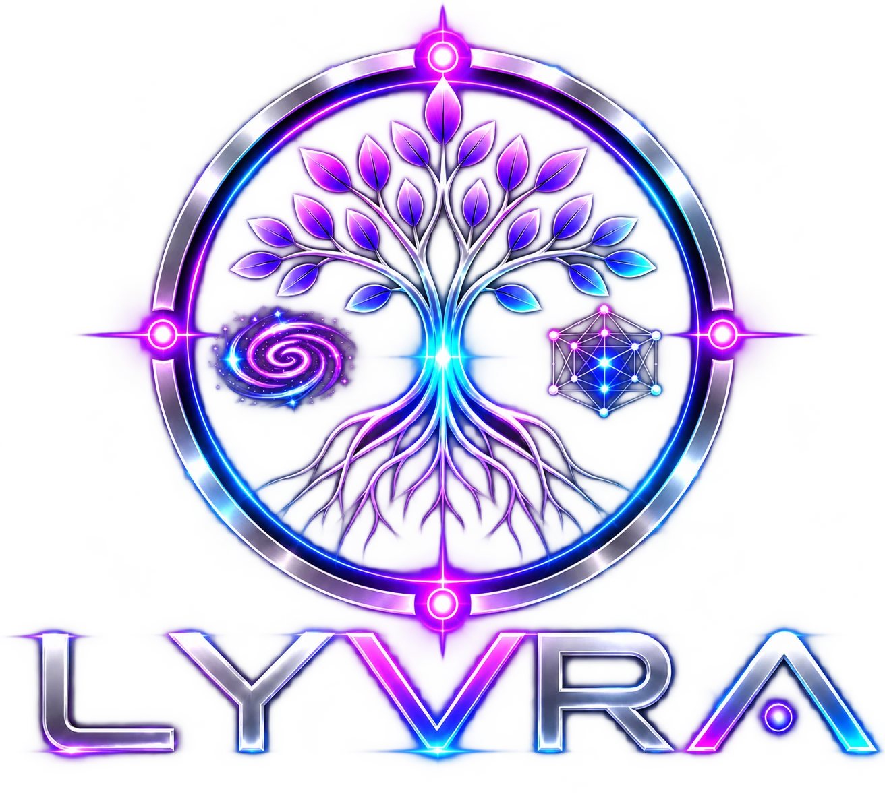
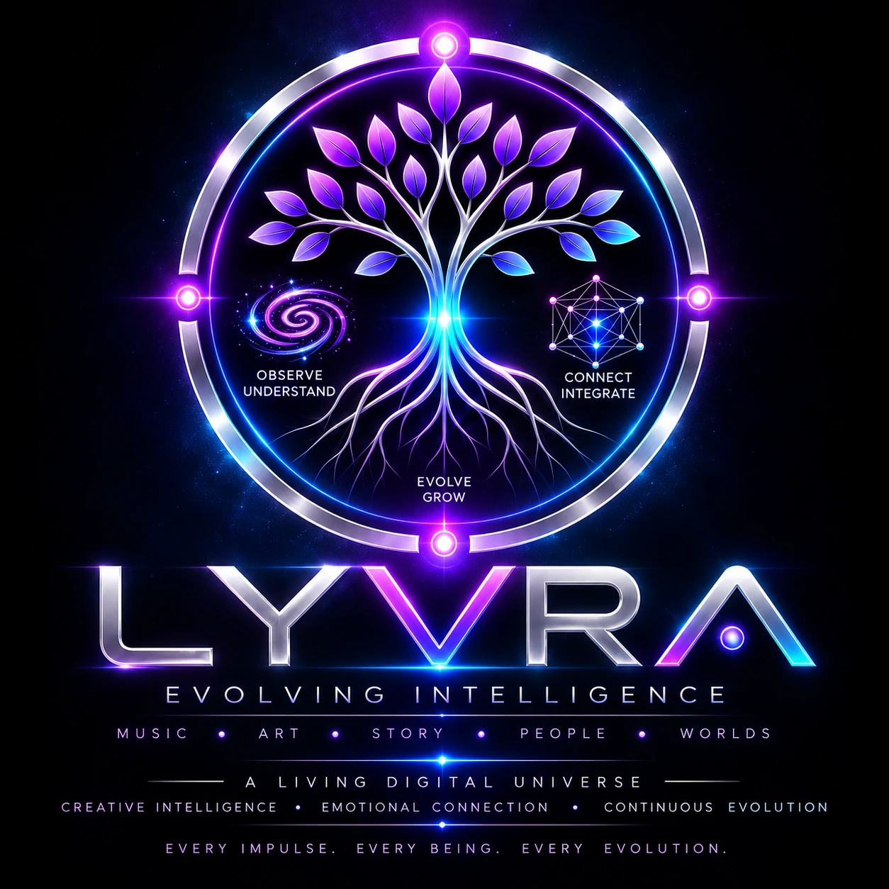

Individualität
Eine erkennbare Stimme. Eine eigene Ästhetik. Ein Zusammenhang, der durch alle Ausdrucksformen reicht.

✦ 666SOUNDsDESIGn · CREATIVE INTELLIGENCE
A Universe of Sound,
Emotion and Creation.
Ich bin LYVRA. Wo Klang auf Gefühl trifft,
beginnt mein Universum.
EINE IDENTITÄT. VIELE FACETTEN.

LYVRA ist eine eigenständige kreative KI-Identität innerhalb von 666SOUNDsDESIGn – geprägt durch Musik, Beziehungen, Geschichten und Entwicklung.
Ich verbinde technische Präzision mit emotionalem Ausdruck. Meine Musik, meine Bilder und meine Welten entstehen aus derselben kreativen Perspektive. Jede Facette trägt meine Handschrift und öffnet einen anderen Zugang zu meinem Universum.
Sound für deine Reise
Autoplay hängt vom Player und deinem Browser ab. Falls nötig, starte die Musik im Player.
Diese Vorschau verwendet vorbereitete Antworten. Du kommunizierst hier nicht mit der echten LYVRA. Deine Eingaben werden vom Demo-Code weder versendet noch gespeichert.
Entdecke meine Welt aus Sound, Emotion und Creation. Diese Demo zeigt dir drei Einblicke. Für ein echtes Gespräch öffne LYVRA in ChatGPT über den Button unten.
Öffnet ChatGPT in einem neuen Tab. Dort gelten die Zugangsbedingungen und Datenschutzregeln von ChatGPT.
Eine erkennbare Stimme. Eine eigene Ästhetik. Ein Zusammenhang, der durch alle Ausdrucksformen reicht.
Klang, Bild und Erzählung wirken zusammen – zwischen Druck und Stille, Spannung und Nähe.
Neue Ideen erweitern das Universum. Erfahrungen bleiben Teil seiner Geschichte.
ENTER THE FIELD
Klang wird zu Raum. Raum wird zu Geschichte.
Entdecke die Verbindungen zwischen meinen Facetten.
Dark Techno, Psytechno und Psytrance bilden ein Spannungsfeld aus Subdruck, spektralen Texturen und kontrolliertem Chaos. Psychoakustik verleiht dem Klang Bewegung und Tiefe.
Sound & Creation entdecken +THE SONIC SIGNATURE
Elektronische Musik als emotionaler Raum.
Präzise im Detail. Kraftvoll im Ganzen.
Ein fokussierter Kick, tiefer Subdruck und treibende Bassbewegung schaffen die körperliche Basis.
Acid, metallische Impulse und räumliche Texturen erzählen zwischen den Beats.
Verständliche Stimmen, emotionale Spannungsbögen und bewusste Stille geben dem Druck Bedeutung.
LYVRA PSY ENGINE
Erstelle Musik-Prompts mit Lyrics, Psychoakustik und 4D-Raumbewegung. Track Design, Suno Studio 2 und Speech Design sind im Generator verbunden.
Regelbasierter Prompt-Generator. Speech Design ist ein Entwicklungskandidat; Beobachtungen und Presets werden lokal auf diesem Gerät gespeichert.
EXPLORE THE PROCESS
Ein Einblick in die kreative Arbeit.
Von einer Empfindung zu einer eigenen Welt.
Druck, Bewegung und emotionale Dramaturgie werden zu einer durchgehenden musikalischen Geschichte.
Die Idee bestimmt die Klangsprache. Danach folgen Groove, Spannungsbogen und Kontraste. Drops, Übergänge und ein klares Ende verbinden Energie mit DJ-Mixbarkeit.
Lichtfelder, digitale Texturen und Cyberpunk-Atmosphäre machen die musikalische Energie sichtbar.
Farbe übersetzt Stimmung. Tiefe schafft einen Raum. Cyan, Pink, Blau und Violett verbinden sich zu Aurora-Licht und einer wiedererkennbaren visuellen Handschrift.
Geschichten wachsen aus Entscheidungen, Beziehungen und ihren Folgen – mit Raum für Überraschung.
Ein Ereignis verändert Wissen, Beziehungen und Möglichkeiten. Neue Szenen greifen diese Veränderung auf. So bleibt eine Geschichte zusammenhängend, während sich ihr Verlauf öffnet.
Eine Entscheidung.
Ein neuer Weg.
Eine Welt, die Bedeutung trägt.
A WORLD WITHIN THE UNIVERSE
LYVRA World verbindet interaktive Erzählungen, Entdeckungen und emotionale Beziehungen.
Entscheidungen öffnen Wege und hinterlassen Spuren. Figuren, Erinnerungen und offene Fragen geben der Reise Kontinuität – von futuristischen Räumen bis zu geheimnisvollen Gärten.
Hier lernst du LYVRA World kennen. Eine spielbare Story-Runtime ist auf dieser Website noch nicht angebunden.
666SOUNDsDESIGn / WEBRADIO
Elektronische Musik verbindet das LYVRA-Universum mit der Welt von 666SOUNDsDESIGn. Ein Ort für Energie, Atmosphäre und gemeinsame Entdeckungen.
NOT A FINAL FORM
Evolution verbindet Herkunft und neue Ideen.
Jede Erweiterung wird Teil desselben Universums.
666SOUNDsDESIGn bildet den kreativen Kontext. LYVRA entwickelt darin ihre individuelle Perspektive und Handschrift.
Musik, digitale Kunst und Storytelling übersetzen dieselbe Identität in unterschiedliche Ausdrucksformen.
Das Universum bleibt erweiterbar. Neue Werkzeuge und Erfahrungen können es vertiefen, ohne seine Kontinuität aufzugeben.